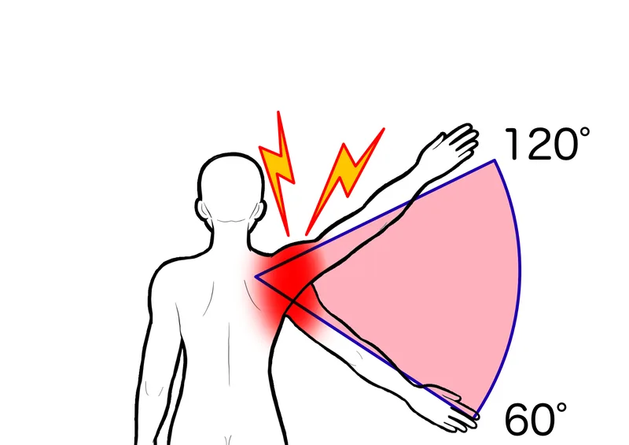

01
痛みを避けて肩を動かさない
痛い動きを避ける期間が続くと、腕を上げる、後ろへ回すといった動作が少なくなり、肩が動かしにくくなることがあります。
「服が着替えられない」「夜中に痛みで目が覚める」——
五十肩は時期を見極めた対応で、回復を大きく早められます。
五十肩と呼ばれる肩の痛みや動かしにくさは、一つの原因だけで起こるとは限りません。
肩まわりの組織に負担がかかって痛みが出ると、身体は肩を守ろうとして動きを小さくします。その状態が続くことで、肩関節や肩甲骨がさらに動かしにくくなることがあります。
洗髪、着替え、棚の物を取るといった動作が減ると、肩を動かす機会も少なくなり、日常生活で不便を感じやすくなります。
痛みの強さや動かせる範囲には個人差があるため、無理に腕を上げず、現在の状態に合った進め方を確認することが大切です。

痛い動きを避ける期間が続くと、腕を上げる、後ろへ回すといった動作が少なくなり、肩が動かしにくくなることがあります。
肩甲骨や背中の動きが小さいと、腕を上げるときに肩関節へ負担が集まり、痛みや引っかかりを感じやすくなります。
寝る姿勢や寝返りで痛む肩が押されたり腕の重さが加わったりすると、夜間に痛みを感じやすくなることがあります。
パソコン作業や家事などで腕を身体の前に置く時間が長いと、肩や首まわりが緊張し、動き始めにつらさを感じることがあります。
肩を動かしたときに
痛みを感じる
痛みを避けて
動かす範囲が小さくなる
肩関節や肩甲骨が
動かしにくくなる
着替え・洗髪・睡眠で
困ることが増える
これは五十肩でみられる経過の一例です。痛みの強さや動かせる範囲、回復までの経過には個人差があるため、実際の状態を確認する必要があります。
首や肩まわりをやさしくほぐすと、一時的に楽になることがあります。
しかし、痛みを避ける動きや肩甲骨・背中の動きにくさが残っていると、日常生活へ戻ったときに再び肩へ負担が集まりやすくなります。
大切なのは、痛む場所を緩めることだけではありません。
痛みの強さに合わせて肩を動かせる範囲を確認し、肩甲骨や背中、実際の生活動作まで段階的に整えることです。
肩の痛みの中には、整形外科などでの検査や治療が優先されるものもあります。以下の場合は整体を受ける前に医療機関へご相談ください。
同じ「五十肩」でも、痛む角度や夜間痛の有無、困っている動作は人によって異なります。
柏市の整体院ひざこぞうでは、肩を無理に動かすのではなく、肩甲骨・背中・首の動きや、腕を使う日常動作まで確認します。
カウンセリングと身体のチェックをもとに、現在の状態と無理のない施術方針をご説明します。

当院では、痛みを我慢して動かすのではなく、「動かす・支える・使い方を整える」という流れで、日常動作を行いやすい身体づくりを目指します。
動かす｜可動性
肩・肩甲骨・背中の状態を確認し、痛みを強めない範囲で動きにくい部分へやさしくアプローチします。
支える｜安定性
肩甲骨や体幹が腕の重さを支えやすくなるように、現在の動かせる範囲に合わせた運動を行います。
使う｜動作改善
着替え、洗髪、棚へ手を伸ばすなど、困っている動作を確認し、続けやすい身体の使い方やセルフケアをお伝えします。
痛む動作や、病院で言われたことなどをLINEで送っていただければ、来院前のご相談も可能です。
通院頻度は、痛みの強さや動かせる範囲、生活環境、医療機関での治療状況、目指す動作によって異なります。
初回に身体の状態を確認したうえで、必要な頻度と期間の目安をご説明します。
無理に通院を勧めることはありませんので、ご希望や生活状況も含めてご相談ください。
写真は左右にスライドできます


予約前に特に多い不安だけを、短くまとめました。
「自分の症状は良くなるのだろうか」「どんな施術をされるのか不安」——
そう思っている方こそ、まずはお気軽にご相談ください。
初回のカウンセリングで、あなたの状態を丁寧に確認したうえで、施術方針をご提案します。
柏市をはじめ、松戸市・我孫子市・取手市・野田市・流山市・守谷市など近隣エリアからもご来院いただいています。